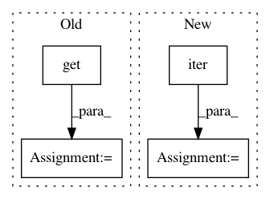

c7d901d0c1a6852f95f28ebf1bc5ea25e08e7eac,onnx_coreml/_operators.py,,_convert_upsample,#Any#Any#Any#Any#,1517
Before Change
height_scale = int(scales[2])
width_scale = int(scales[3])
else:
height_scale = int(node.attrs.get("height_scale", 1))
width_scale = int(node.attrs.get("width_scale", 1))
mode_convert = {
"nearest": "NN",
"linear": "BILINEAR",
After Change
height_scale = int(scales[2])
width_scale = int(scales[3])
else:
key = next(iter(node.input_tensors.keys()))
scales = node.input_tensors[key]
height_scale = int(scales[2])
width_scale = int(scales[3])
mode_convert = {
In pattern: SUPERPATTERN
Frequency: 3
Non-data size: 4
Instances
Project Name: onnx/onnx-coreml
Commit Name: c7d901d0c1a6852f95f28ebf1bc5ea25e08e7eac
Time: 2019-02-10
Author: dmitry.begeza@gmail.com
File Name: onnx_coreml/_operators.py
Class Name:
Method Name: _convert_upsample
Project Name: facebookresearch/pytext
Commit Name: d81ccf0d45db08c5ca74192df51af4e731827e23
Time: 2019-01-15
Author: barlaso@fb.com
File Name: pytext/metric_reporters/disjoint_multitask_metric_reporter.py
Class Name: DisjointMultitaskMetricReporter
Method Name: __init__
Project Name: WZBSocialScienceCenter/tmtoolkit
Commit Name: 2f85c7fe83c831a41743b4aa67e94f4eb69cdb68
Time: 2017-08-22
Author: markus.konrad@wzb.eu
File Name: tmtoolkit/preprocess.py
Class Name: _PreprocWorker
Method Name: run